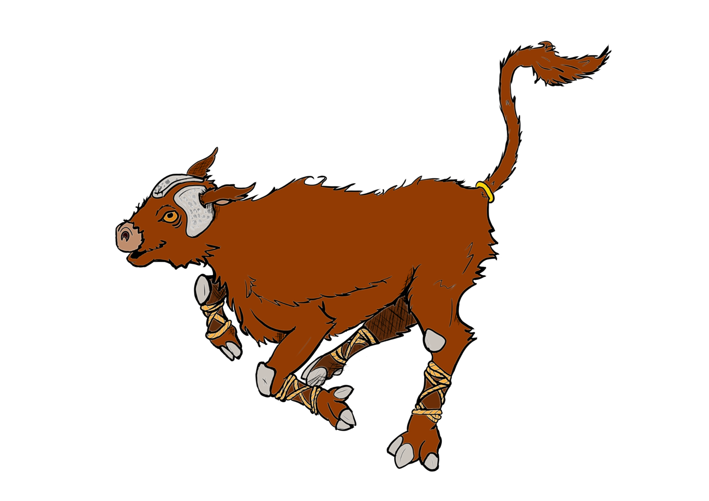

Chronikin
Palitaur
A proud, powerful Chronikin whose form evokes ancient myths of horned guardians and mighty beasts.
The living record
A growing public compendium of CoM lore, nations, creatures, histories, and discoveries.
Chronikin
A proud, powerful Chronikin whose form evokes ancient myths of horned guardians and mighty beasts.

Chronikin
A melodic and mysterious Chronikin whose presence hints at forgotten songs and sea-born legend.
Term
A rare individual capable of forming meaningful bonds with Chronikin and preserving the legends they create together.
Nation
A nation within the world of CoM whose people, customs, and stories will be expanded as the Archive grows.
History
The defining transformation of the setting: stories once considered impossible became living parts of the world.